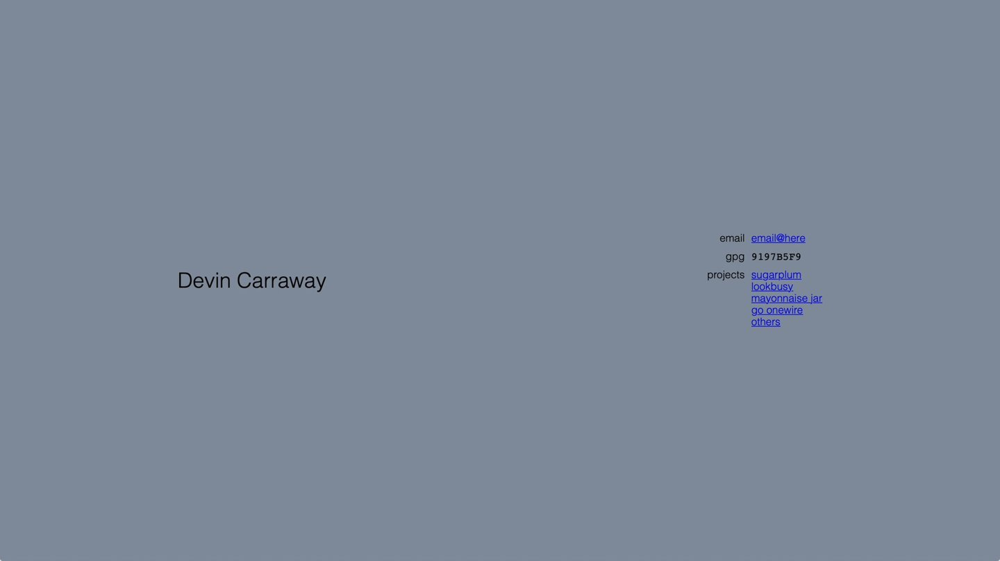

A private working sheet for comparing directions. Each frame is the live study at 1440×900 and 390×844; open one to see it at your own window size. Links inside the studies go to the current production pages. Nothing here is published to colecalfee.com.
A two-cell table filling the window, each cell centred. The name lands at 25% of the width, the details at 76%, both on the vertical midline. The background samples at #7d8999, within screenshot error of the X11 colour name lightslategray (#778899). Default blue links on it measure 2.6:1, which fails contrast; the studies keep the restraint and fix that.

Off-white field. The name and a small labelled index share one baseline, set above the optical centre. On the phone it becomes an envelope: name where the sender writes, index where the address goes.
Calm, correct, and closest to the reference. Easy to live with for decades. The risk is that it is only correct.
The colour is the page and the words are its wall label: one small block in the lower left, all one size. At night (system dark mode) the field deepens to the blue after dusk.
The most atmospheric and the most memorable at a glance. Typographically the thinnest; it depends entirely on the colour being right on every screen.
No landing page: every one of the 23 existing works, grouped as Work, Photographs, Music and Paintings, with years, on one screen. External links are marked. Correspondence sits under the name.
The most useful and the most honest about the archive. Least like a gesture; most like a working index. It will need pruning or a second level as the list grows.
The desktop screen is an open book, with margins from the Van de Graaf canon. Title page on the right, colophon on the left, their last lines on one baseline. Red marks only what can be turned to. The phone is a single page.
The most composed and the most specific. Georgia ties it to the screen rather than to nostalgia. It leans literary, and the centred axis is formal.
No font, size or colour is chosen. The browser supplies all of them, including dark mode and the purple of visited links. Contact sits in an <address>, so it is italic by default. Placed at the golden section.
The purest idea, and the one most likely to look the same in 2046. It also looks unfinished to most visitors. Better as a principle than as the homepage.
A single photograph of yours, hung small: a truck crossing open ground at Teton Valley Ranch, 2015. The name hangs from its top edge and the index stands on its bottom edge. You would change the picture by hand, rarely.
Recommended for further development. The photograph says “a person” where the other studies say “a page”, and changing it is the one thing on the homepage that evolves.